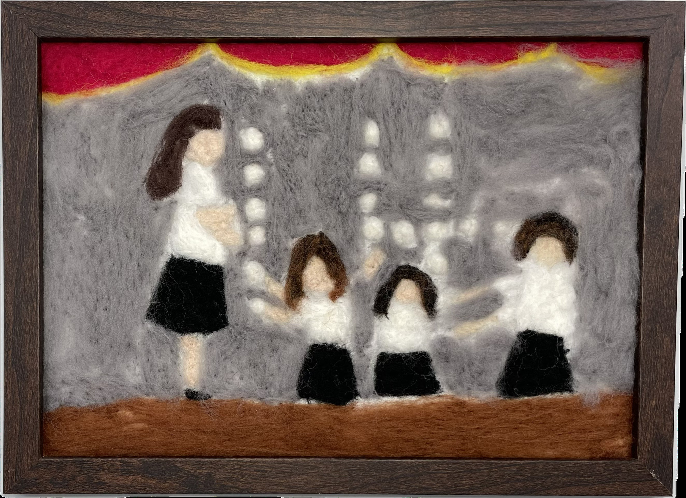

作品名稱：Flashlight
作者姓名：吳紹綺
作品主題：團唱比賽結尾的經典畫面
作品敘述：這是當時團場比賽我們一起用手電筒排下14的樣子，伴隨台下觀眾的喝彩和鼓掌聲，塑造了我們這段特別難忘的回憶。在苦苦練習數個月後得到第一名的團唱比賽，是14班共同的回憶，我認為這個畫面是個值得記錄下來這瞬間，因此以此作為作品主題。
This is the scene from our choir competition where we used flashlights to form the number “14,” accompanied by cheers and applause from the audience. It was a truly unforgettable moment for all of us.After months of hard practice, winning first place in the choir competition became a cherished memory for Class 14. I believe this moment is worth capturing, which is why I chose it as the theme of my work.